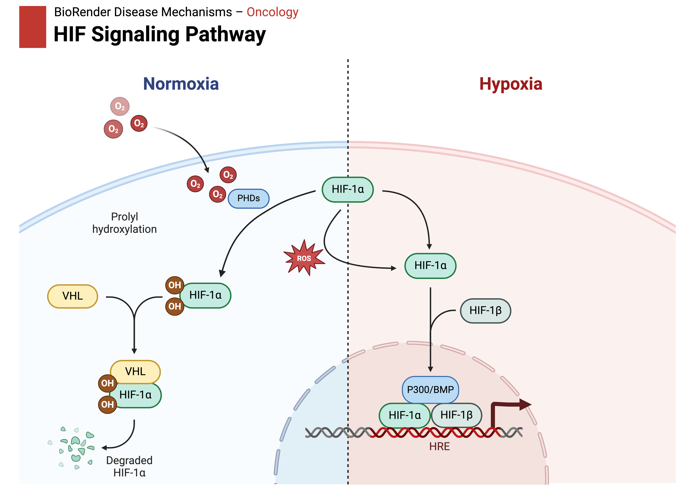

Grants
I am currently working on submitting two grants described below, talk about some stuff for a few sentences.
Title - Altered Glycolysis in Cystic Fibrosis Mice Small Intestine
NIDDK - F31
Metabolism of fats and carbohydrates is altered in cystic fibrosis (CF), but the etiology is not clear. Much emphasis has been placed on lipid metabolism, but carbohydrate and protein metabolism are much less well characterized. Carbohydrate metabolism is particularly complicated because most persons with CF will develop diabetes as they age, but the energy imbalance in CF is present throughout life.
Mouse models of CF do not appear to develop diabetes, but we find that circulating glucose levels are reduced in CF mice relative to WT animals, providing an opportunity to study altered metabolism without the complications of diabetes.
Glucose is available to the body through the ingestion of carbohydrates, gluconeogenesis, or glycogenolysis of liver and muscle glycogen, all of which will supply the blood with glucose to be carried to peripheral tissues. We find that hepatic glycogen in CF mice is similar to WT mice after feeding and glycogenolysis appears to be similar across genotypes as well. To monitor and compare the fate of glucose in CF and WT animals, regardless of its origin, mice were injected by tail vein with a radioactively labeled analog of glucose, 18 FDG, to bypass absorption and gluconeogenesis allowing glucose originating from a single source to be traced through the body. PET-MRI and CT- MRI of 18 FDG showed that there is a more rapid uptake by CF than WT animals of glucose from the circulation to the gut. As 18 FDG is not metabolized, the fate of glucose (glycolysis, excretion, etc.) could not be determined.
Transcriptome analyses of small intestines, their crypts, and organoids derived from the crypts, suggest glycolysis is increased in CF intestines and crypts, but not organoids. Measurements of intestinal tissue glycolysis indicate that glycolysis is, in fact, elevated in CF intestines, but why the difference is observed in crypts, but not organoids, is not clear.

Title - Hif1a activaton in the cystic fibrosis small intestine
CFF - Student Trainee Award
I will begin by performing Western Blots using protein samples collected from intestinal tissue as well as samples from organoids in order to see if the transcriptional upregulation translates to an increase in the stabilized HIF-1α subunit. I would expect to see increased levels of HIF-1α in the intestinal tissue compared to the organoids
The next test would be to look at the localization of HIF-1α within the cell, if HIF-1α isn't degraded then it is translocated into the nucleus where it dimerizes with the HIF-1β subunit to begin to act as a transcription factor. If we can see an increase in protein levels via the western blot we can then perform immunohistochemistry or immunofluorescence techniques to visualize the localization of HIF-1α within the cell, expecting to see localization within the nucleus, a DAPI counterstain would be used to visualize the nuclear space.
Once confirmed that HIF-1α displays increased protein levels in the intestine but not the organoids as well as the HIF-1α being localized to the nucleus where it begins acting as a transcription factor I can perform ChIP-seq then followed by ATAC to further understand the specific genes that HIF-1α is able to act as a transcription factor for as well as chromatin availability differences between the samples. ChIP-seq is an important experiment to determine where in the genome the HIF complex binds to acting as a transcription factor, then I can work back to understand what genes those regions are associated with and then what potential pathways could be affected. This would give me a specific set of genes that the HIF complex acts on in a CF-specific environment which we can then match to specific pathways that it may upregulate such as glycolysis. This could be followed by ATAC seq to look for differences in chromatin availability between these samples to understand how the specific environments may impact and alter the downstream effects of the HIF complex transcription factor. 